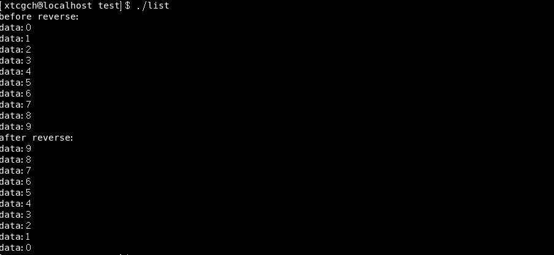
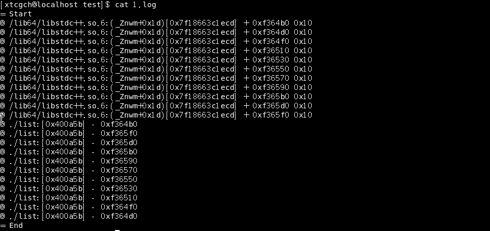
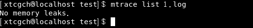
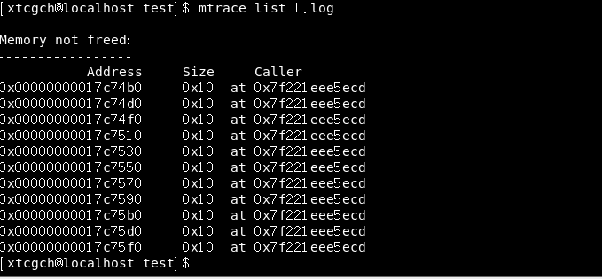

<!DOCTYPE HTML>
<html lang="zh-CN">
<head><meta name="generator" content="Hexo 3.8.0">
    <!--Setting-->
    <meta charset="UTF-8">
    <meta name="viewport" content="width=device-width, user-scalable=no, initial-scale=1.0, maximum-scale=1.0, minimum-scale=1.0">
    <meta http-equiv="X-UA-Compatible" content="IE=Edge,chrome=1">
    <meta http-equiv="Cache-Control" content="no-siteapp">
    <meta http-equiv="Cache-Control" content="no-transform">
    <meta name="renderer" content="webkit|ie-comp|ie-stand">
    <meta name="apple-mobile-web-app-capable" content="我的博客 - blog">
    <meta name="apple-mobile-web-app-status-bar-style" content="black">
    <meta name="format-detection" content="telephone=no,email=no,adress=no">
    <meta name="browsermode" content="application">
    <meta name="screen-orientation" content="portrait">
    <link rel="dns-prefetch" href="https://lives.xtcgch.ink">
    <!--SEO-->

<meta name="description" content="脑容量不够，笔记来凑">


<meta name="robots" content="all">
<meta name="google" content="all">
<meta name="googlebot" content="all">
<meta name="verify" content="all">
    <!--Title-->


<title>【实战】链表反转 | 我的博客 - blog</title>


    <link rel="alternate" href="/atom.xml" title="我的博客 - blog" type="application/atom+xml">


    <link rel="icon" href="https://blog.xtcgch.ink/img/background/海绵宝宝.ico">

    


<link rel="stylesheet" href="/css/bootstrap.min.css?rev=3.3.7">
<link rel="stylesheet" href="/css/font-awesome.min.css?rev=4.5.0">
<link rel="stylesheet" href="/css/style.css?rev=@@hash">


    


    

</head>

</html>
<!--[if lte IE 8]>
<style>
    html{ font-size: 1em }
</style>
<![endif]-->
<!--[if lte IE 9]>
<div style="ie">你使用的浏览器版本过低，为了你更好的阅读体验，请更新浏览器的版本或者使用其他现代浏览器，比如Chrome、Firefox、Safari等。</div>
<![endif]-->

<body>
    <header class="main-header" style="background-image:url(https://blog.xtcgch.ink/img/head-bg.jpg)">
    <div class="main-header-box">
        <a class="header-avatar" href="/" title="unistd68">
            
        </a>
        <div class="branding">
        	<!--<h2 class="text-hide">Snippet主题,从未如此简单有趣</h2>-->
            
                <h2> 脑容量不够，笔记来凑 </h2>
            
    	</div>
    </div>
</header>
    <nav class="main-navigation">
    <div class="container">
        <div class="row">
            <div class="col-sm-12">
                <div class="navbar-header"><span class="nav-toggle-button collapsed pull-right" data-toggle="collapse" data-target="#main-menu" id="mnav">
                    <span class="sr-only"></span>
                        <i class="fa fa-bars"></i>
                    </span>
                    <a class="navbar-brand" href="https://lives.xtcgch.ink">我的博客 - blog</a>
                </div>
                <div class="collapse navbar-collapse" id="main-menu">
                    <ul class="menu">
                        
                            <li role="presentation" class="text-center">
                                <a href="https://blog.xtcgch.ink/"><i class="fa "></i>主页</a>
                            </li>
                        
                            <li role="presentation" class="text-center">
                                <a href="https://blog.xtcgch.ink/categories/原理/"><i class="fa "></i>原理</a>
                            </li>
                        
                            <li role="presentation" class="text-center">
                                <a href="https://blog.xtcgch.ink/categories/实战/"><i class="fa "></i>实战</a>
                            </li>
                        
                            <li role="presentation" class="text-center">
                                <a href="https://blog.xtcgch.ink/categories/开源/"><i class="fa "></i>开源</a>
                            </li>
                        
                            <li role="presentation" class="text-center">
                                <a href="https://blog.xtcgch.ink/categories/求职/"><i class="fa "></i>求职</a>
                            </li>
                        
                            <li role="presentation" class="text-center">
                                <a href="https://blog.xtcgch.ink/categories/其他/"><i class="fa "></i>其他</a>
                            </li>
                        
                            <li role="presentation" class="text-center">
                                <a href="https://blog.xtcgch.ink/archives/"><i class="fa "></i>时间轴</a>
                            </li>
                        
                    </ul>
                </div>
            </div>
        </div>
    </div>
</nav>
    <section class="content-wrap">
        <div class="container">
            <div class="row">
                <main class="col-md-8 main-content m-post">
                    <p id="process"></p>
<article class="post">
    <div class="post-head">
        <h1 id="【实战】链表反转">
            
	            【实战】链表反转
            
        </h1>
        <div class="post-meta">
    
    
    <span class="categories-meta fa-wrap">
        <i class="fa fa-folder-open-o"></i>
        <a href="https://blog.xtcgch.ink/categories/实战">
            实战
        </a>
    </span>
    

    
    <span class="fa-wrap">
        <i class="fa fa-tags"></i>
        <span class="tags-meta">
            
                
                    <a href="https://blog.xtcgch.ink/tags/C++" title="C++">
                        C++
                    </a>
                
                    <a href="https://blog.xtcgch.ink/tags/链表" title="链表">
                        链表
                    </a>
                
            
        </span>
    </span>
    

    
        
        <span class="fa-wrap">
            <i class="fa fa-clock-o"></i>
            <span class="date-meta">2021/03/18</span>
        </span>
        
    
</div>

            
            
    </div>
    
    <div class="post-body post-content">
        <p><strong>摘要：</strong>简单实现链表反转</p>
<a id="more"></a>
<hr>
<h1 id="C-实现"><a href="#C-实现" class="headerlink" title="C++实现"></a><table><tr><td bgcolor="#C7C7C7">C++实现</td></tr></table></h1><h2 id="代码"><a href="#代码" class="headerlink" title="代码"></a><font color="#0000FF">代码</font></h2><figure class="highlight plain"><table><tr><td class="gutter"><pre><span class="line">1</span><br><span class="line">2</span><br><span class="line">3</span><br><span class="line">4</span><br><span class="line">5</span><br><span class="line">6</span><br><span class="line">7</span><br><span class="line">8</span><br><span class="line">9</span><br><span class="line">10</span><br><span class="line">11</span><br><span class="line">12</span><br><span class="line">13</span><br><span class="line">14</span><br><span class="line">15</span><br><span class="line">16</span><br><span class="line">17</span><br><span class="line">18</span><br><span class="line">19</span><br><span class="line">20</span><br><span class="line">21</span><br><span class="line">22</span><br><span class="line">23</span><br><span class="line">24</span><br><span class="line">25</span><br><span class="line">26</span><br><span class="line">27</span><br><span class="line">28</span><br><span class="line">29</span><br><span class="line">30</span><br><span class="line">31</span><br><span class="line">32</span><br><span class="line">33</span><br><span class="line">34</span><br><span class="line">35</span><br><span class="line">36</span><br><span class="line">37</span><br><span class="line">38</span><br><span class="line">39</span><br><span class="line">40</span><br><span class="line">41</span><br><span class="line">42</span><br><span class="line">43</span><br><span class="line">44</span><br><span class="line">45</span><br><span class="line">46</span><br><span class="line">47</span><br><span class="line">48</span><br><span class="line">49</span><br><span class="line">50</span><br><span class="line">51</span><br><span class="line">52</span><br><span class="line">53</span><br><span class="line">54</span><br><span class="line">55</span><br><span class="line">56</span><br><span class="line">57</span><br><span class="line">58</span><br><span class="line">59</span><br><span class="line">60</span><br><span class="line">61</span><br><span class="line">62</span><br><span class="line">63</span><br><span class="line">64</span><br><span class="line">65</span><br><span class="line">66</span><br><span class="line">67</span><br><span class="line">68</span><br><span class="line">69</span><br><span class="line">70</span><br><span class="line">71</span><br><span class="line">72</span><br><span class="line">73</span><br><span class="line">74</span><br><span class="line">75</span><br><span class="line">76</span><br><span class="line">77</span><br><span class="line">78</span><br><span class="line">79</span><br><span class="line">80</span><br><span class="line">81</span><br><span class="line">82</span><br><span class="line">83</span><br></pre></td><td class="code"><pre><span class="line">#include&lt;iostream&gt;</span><br><span class="line">#include &lt;mcheck.h&gt;</span><br><span class="line">#include&lt;stdlib.h&gt;</span><br><span class="line"></span><br><span class="line">using namespace std;</span><br><span class="line"></span><br><span class="line">struct STNode</span><br><span class="line">&#123;</span><br><span class="line">	int data;</span><br><span class="line">	STNode* next;</span><br><span class="line">&#125;;</span><br><span class="line"></span><br><span class="line">STNode* CreateList()</span><br><span class="line">&#123;</span><br><span class="line">	STNode* head = new STNode();</span><br><span class="line">	head-&gt;data = -1;</span><br><span class="line">	head-&gt;next = NULL;</span><br><span class="line">	STNode* p = head;</span><br><span class="line">	for(int i=0;i&lt;10;i++)</span><br><span class="line">	&#123;</span><br><span class="line">		STNode* node = new STNode();</span><br><span class="line">		node-&gt;data = i;</span><br><span class="line">		node-&gt;next = NULL;</span><br><span class="line">		p-&gt;next = node;</span><br><span class="line">		p = node;</span><br><span class="line">	&#125;</span><br><span class="line">	return head;</span><br><span class="line">&#125;</span><br><span class="line"></span><br><span class="line">void DestroyList(STNode* head)</span><br><span class="line">&#123;</span><br><span class="line">	STNode* p = head;</span><br><span class="line">	while(NULL != p)</span><br><span class="line">	&#123;</span><br><span class="line">		head = p-&gt;next;</span><br><span class="line">		delete p;</span><br><span class="line">		p = head;</span><br><span class="line">	&#125;</span><br><span class="line">&#125;</span><br><span class="line"></span><br><span class="line">void PrintList(const STNode* head)</span><br><span class="line">&#123;</span><br><span class="line">	const STNode* p = head-&gt;next;</span><br><span class="line">	while(p != NULL)</span><br><span class="line">	&#123;</span><br><span class="line">		cout&lt;&lt;&quot;data:&quot;&lt;&lt;p-&gt;data&lt;&lt;endl;</span><br><span class="line">		p = p-&gt;next;</span><br><span class="line">	&#125;</span><br><span class="line">&#125;</span><br><span class="line"></span><br><span class="line"></span><br><span class="line">STNode* ReverseList(STNode* head)</span><br><span class="line">&#123;</span><br><span class="line">	STNode* beg = head-&gt;next;</span><br><span class="line">	STNode* end = head-&gt;next;</span><br><span class="line">	if(NULL != beg)</span><br><span class="line">	&#123;</span><br><span class="line">		end = beg-&gt;next;</span><br><span class="line">	&#125;</span><br><span class="line">	while(end != NULL)</span><br><span class="line">	&#123;</span><br><span class="line">		beg-&gt;next = end-&gt;next;</span><br><span class="line">		end-&gt;next = head-&gt;next;</span><br><span class="line">		head-&gt;next = end;</span><br><span class="line">		end = beg-&gt;next;</span><br><span class="line">	&#125;</span><br><span class="line">	return head;</span><br><span class="line">&#125;</span><br><span class="line"></span><br><span class="line">int main()</span><br><span class="line">&#123;</span><br><span class="line">	setenv(&quot;MALLOC_TRACE&quot;,&quot;mem.log&quot;,1);//设置内存检测行为日志，保存在执行目录下，文件名：mem.log</span><br><span class="line">    mtrace();//开始检测内存分配和释放行为</span><br><span class="line">	STNode* list = CreateList();</span><br><span class="line">	cout&lt;&lt;&quot;before reverse:&quot;&lt;&lt;endl;</span><br><span class="line">	PrintList(list);</span><br><span class="line">	list = ReverseList(list);</span><br><span class="line">	cout&lt;&lt;&quot;after reverse:&quot;&lt;&lt;endl;</span><br><span class="line">	PrintList(list);</span><br><span class="line">	DestroyList(list);</span><br><span class="line">	muntrace();//结束内存检测行为</span><br><span class="line">	return 0;</span><br><span class="line">&#125;</span><br></pre></td></tr></table></figure>
<h2 id="输出"><a href="#输出" class="headerlink" title="输出"></a><font color="#0000FF">输出</font></h2><p></p>
<hr>
<h1 id="mtrace检测内存泄漏"><a href="#mtrace检测内存泄漏" class="headerlink" title="mtrace检测内存泄漏"></a><table><tr><td bgcolor="#C7C7C7">mtrace检测内存泄漏</td></tr></table></h1><h2 id="内存行为日志"><a href="#内存行为日志" class="headerlink" title="内存行为日志"></a><font color="#0000FF">内存行为日志</font></h2><p></p>
<h2 id="mtrace工具安装"><a href="#mtrace工具安装" class="headerlink" title="mtrace工具安装"></a><font color="#0000FF">mtrace工具安装</font></h2><figure class="highlight plain"><table><tr><td class="gutter"><pre><span class="line">1</span><br></pre></td><td class="code"><pre><span class="line">sudo yum install glibc-utils</span><br></pre></td></tr></table></figure>
<h2 id="mtrace命令"><a href="#mtrace命令" class="headerlink" title="mtrace命令"></a><font color="#0000FF">mtrace命令</font></h2><ol>
<li>先运行程序，产生日志文件log.log</li>
<li>使用命令<code>mtrace [exe] [log日志]</code>来查看，如 mtrace list log.log</li>
</ol>
<p>检测结果：</p>
<p><strong>无内存泄漏</strong>：</p>
<p></p>
<p><strong>内存泄漏</strong>：</p>
<p></p>

    </div>
    
    <div class="post-footer">
        <div>
            
        </div>
        <div>
            
        </div>
    </div>
</article>

<div class="article-nav prev-next-wrap clearfix">
    
        <a href="/2021/03/30/字符串单词逆序输出/" class="pre-post btn btn-default" title="字符串单词逆序输出">
            <i class="fa fa-angle-left fa-fw"></i><span class="hidden-lg">上一篇</span>
            <span class="hidden-xs">字符串单词逆序输出</span>
        </a>
    
    
        <a href="/2020/12/03/编译原理之cmake/" class="next-post btn btn-default" title="编译原理之cmake">
            <span class="hidden-lg">下一篇</span>
            <span class="hidden-xs">编译原理之cmake</span><i class="fa fa-angle-right fa-fw"></i>
        </a>
    
</div>


    <div id="comments">
        
    
    <div id="vcomments" class="valine"></div>
    <script src="//cdn1.lncld.net/static/js/3.0.4/av-min.js"></script>
<script src="/assets/valine.min.js"></script>

    <script>
        new Valine({
            av: AV,
            el: '#vcomments',
            appId: 'XWA5gq7VCJybw7YQhf5HG20r-gzGzoHsz',
            appKey: '8FW1WEwrysHXaUD1bhGn2Rp8',
            placeholder: '说点什么吧',
            notify: true,
            verify: false,
            avatar: 'https://blog.xtcgch.ink/img/comment-avatar.jpg',
            meta: 'nick,mail'.split(','),
            pageSize: '10',
            path: window.location.pathname,
            lang: 'zh-CN'.toLowerCase()
        })
    </script>


    </div>


                </main>
                
                    <aside id="article-toc" role="navigation" class="col-md-4">
    <div class="widget">
        <h3 class="title">文章目录</h3>
        
            <ol class="toc"><li class="toc-item toc-level-1"><a class="toc-link" href="#C-实现"><span class="toc-text">C++实现</span></a><ol class="toc-child"><li class="toc-item toc-level-2"><a class="toc-link" href="#代码"><span class="toc-text">代码</span></a></li><li class="toc-item toc-level-2"><a class="toc-link" href="#输出"><span class="toc-text">输出</span></a></li></ol></li><li class="toc-item toc-level-1"><a class="toc-link" href="#mtrace检测内存泄漏"><span class="toc-text">mtrace检测内存泄漏</span></a><ol class="toc-child"><li class="toc-item toc-level-2"><a class="toc-link" href="#内存行为日志"><span class="toc-text">内存行为日志</span></a></li><li class="toc-item toc-level-2"><a class="toc-link" href="#mtrace工具安装"><span class="toc-text">mtrace工具安装</span></a></li><li class="toc-item toc-level-2"><a class="toc-link" href="#mtrace命令"><span class="toc-text">mtrace命令</span></a></li></ol></li></ol>
        
    </div>
</aside>

                
            </div>
        </div>
    </section>
    <footer class="main-footer">
    <div class="container">
        <div class="row">
        </div>
    </div>
</footer>

<a id="back-to-top" class="icon-btn hide">
	<i class="fa fa-chevron-up"></i>
</a>


    <div class="copyright">
    <div class="container">
        <div class="row">
            <div class="col-sm-12">
                <div class="busuanzi">
    
</div>

            </div>
            <div class="col-sm-12">
                <span>Copyright &copy; 2018
                </span> |
                <span>
                    Powered by <a href="//hexo.io" class="copyright-links" target="_blank" rel="nofollow">Hexo</a>
                </span> |
                <span>
                    Theme by <a href="//github.com/shenliyang/hexo-theme-snippet.git" class="copyright-links" target="_blank" rel="nofollow">Snippet</a>
                </span>
            </div>
        </div>
    </div>
</div>


<script src="/js/app.js?rev=@@hash"></script>

</body>
</html>